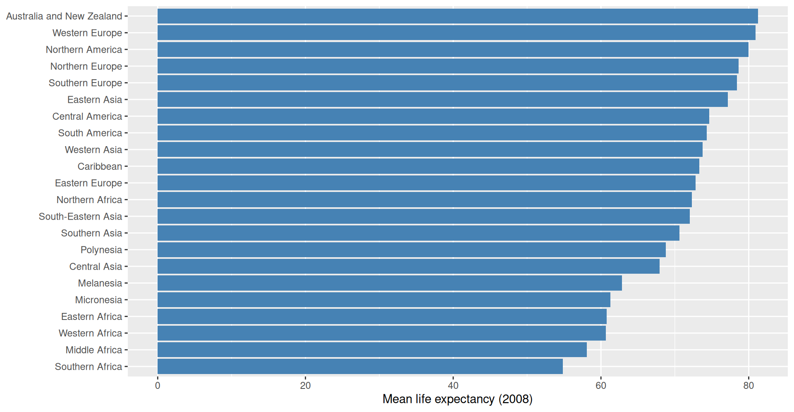

library(stringr) # every function starts with str_
library(dplyr)
library(tidyr) # drop_na()
library(r02pro) # the gm dataGPH-GU 2182: Statistical Programming in R · Fall 2026
New York University · School of Global Public Health
2026-10-21
stringr detection, extraction, replacement.forcats for ordered, lumped categories.lubridate parsing and date arithmetic.Free-text fields are everywhere, and they are messy:
"Type 2 diabetes mellitus" vs "T2DM" vs "type II diabetes""metformin 500mg BID", "METFORMIN 500 MG""NYC-BK-014", "nyc-qn-101"stringr gives consistent, pipe-friendly tools: the first argument is always the string vector.
stringr Verbs| Function | Question | Example | Result |
|---|---|---|---|
str_detect() |
Does it match? | str_detect(meds, "statin") |
FALSE FALSE TRUE |
str_count() |
How many matches? | str_count(meds, "m") |
3 1 1 |
str_extract() |
What matched? | str_extract(meds, "\\d+mg") |
"500mg" "10mg" "20mg" |
str_replace() |
Swap the match | str_replace(meds, "mg", " mg") |
"metformin 500 mg" "Lisinopril 10 mg" "atorvastatin 20 mg" |
str_to_lower(), str_to_upper(), str_trim(), str_length() handle cleanup basics.str_detect() Powers filter()# A tibble: 6 × 2
country life_expectancy
<chr> <dbl>
1 Afghanistan 59.9
2 Kazakhstan 67.3
3 Pakistan 63.1
4 Tajikistan 68
5 Turkmenistan 68.8
6 Uzbekistan 66.2# A tibble: 3 × 1
country
<chr>
1 United Arab Emirates
2 United Kingdom
3 United States Pattern matching + last week’s verbs = powerful cohort selection.
Your worksheet defines a messy prescriptions tibble.
drug_lower: the drug column in lowercase (str_to_lower).drug_lower contains "metformin"."mg") into a dose column with str_extract()."bid" (twice daily) using str_detect() + sum()."\\d+mg" reads: one or more digits, then mg.sum() of a logical counts the TRUEs (Week 2!).| Pattern | Matches | Example |
|---|---|---|
abc |
literal text | "abc" |
. |
any single character | "a.c" matches "abc", "a2c" |
\\d |
any digit | "\\d\\d" matches "42" |
\\w |
letter, digit, or _ |
|
\\s |
whitespace | |
[abc] |
one of a, b, c | "[TF]" matches "T" or "F" |
[0-9] |
character range | same as \\d |
Tip
In R strings you must double the backslash: the regex \d is typed "\\d".
| Pattern | Meaning |
|---|---|
x? |
zero or one x |
x* |
zero or more |
x+ |
one or more |
x{3} |
exactly three |
^x |
starts with x |
x$ |
ends with x |
[1] TRUE FALSE TRUE FALSE[1] "014" "2" "101" "77" [1] TRUE TRUE TRUE FALSEstr_replace() and str_replace_all()[1] "pt reports hypertension; hx of htn in family"
[2] "no hypertension noted" [1] "pt reports hypertension; hx of hypertension in family"
[2] "no hypertension noted" str_remove() / str_remove_all() are shortcuts for replacing with "".Using the site_codes vector in your worksheet:
"^[A-Z]{3}-[A-Z]{2}-\\d+$"? (str_detect)str_extract() and "-[A-Z]{2}-", then clean the dashes with str_remove_all().^ and $ force a full match.A factor stores a categorical variable with known, fixed levels:
[1] "mild" "moderate" "severe" severity
mild moderate severe
2 1 2 ggplot2 axes.fct_reorder(): Order Levels by a StatisticThe #1 factor trick for readable plots: order categories by their value, not alphabetically.
Bars now rise in order: instantly readable.
fct_reorder(): Order Levels by a Statistic
fct_lump(): Collapse Rare CategoriesToo many categories? Keep the most common, lump the rest into "Other":
# A tibble: 6 × 2
region_top n
<fct> <int>
1 Other 108
2 Western Asia 17
3 Eastern Africa 16
4 Western Africa 16
5 Caribbean 13
6 South America 12"Other"; see also fct_infreq() and fct_rev().gm 2008, compute mean child_mortality per region (drop missing values).fct_reorder(): note the alphabetical mess.fct_reorder(region, mean_cm).fct_lump(region, n = 6) on the raw rows, then count() the lumped factor.fct_reorder(category, value) inside aes().[1] "2026-10-21"[1] "2026-10-21"[1] "2026-10-21"Date object: sortable, plottable, subtractable.[1] 41Warning
Never compute age as (visit - dob) / 365.25 for clinical work; leap years and month lengths make interval() / years(1) the reliable idiom.
Asked to extract doses like "500mg", an AI wrote:
Audit findings:
* means zero or more: the pattern matches a bare "mg" with no digits at all."500 mg" (space before the unit) it returns just "mg", silently losing the dose.[1] "500mg" "500 mg" NA Important
Regex from AI is a hypothesis, not an answer. Always test on: a normal case, a spaced case, and a should-NOT-match case.
Note
Laptops closed, please. Your in-class worksheet should already be pushed to GitHub before the quiz begins.
if / else decisions and vectorized ifelse().for and while loops; accumulator patterns.Questions? Office hours are listed on the syllabus page, or email anytime.